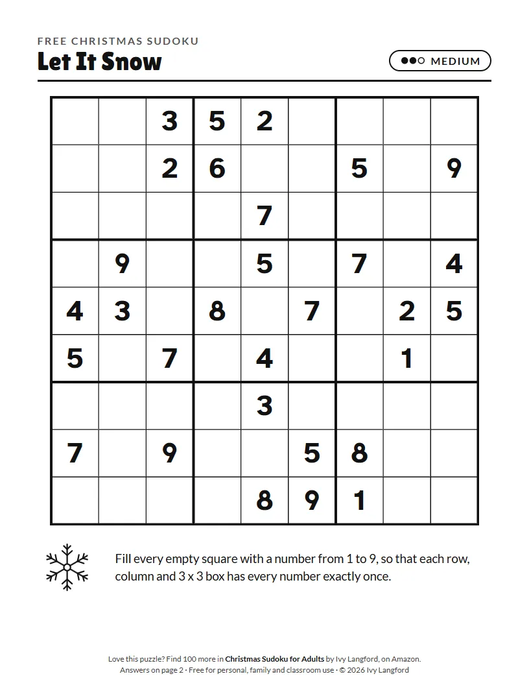

Christmas Sudoku: Let It Snow
Large PrintMediumAnswer key
A medium holiday Sudoku. Pencil in your notes and let the numbers fall into place.

Download the free PDF
Two pages: the puzzle and its answer key. Letter size; on A4 paper, choose "Fit to page" when you print. Free for personal, family and classroom use.
How to play
Fill every empty square with a number from 1 to 9, so that each row, column and 3 x 3 box has every number exactly once. This medium puzzle has fewer numbers to start from, so it takes more thinking. The answer is on page 2 of the PDF.